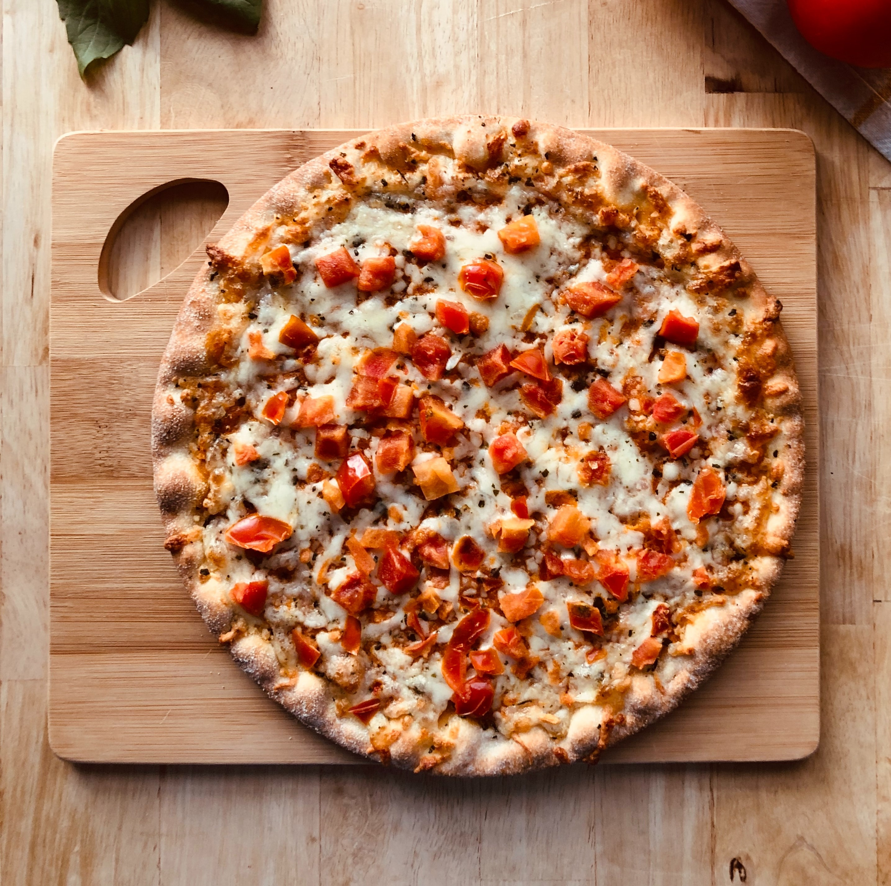
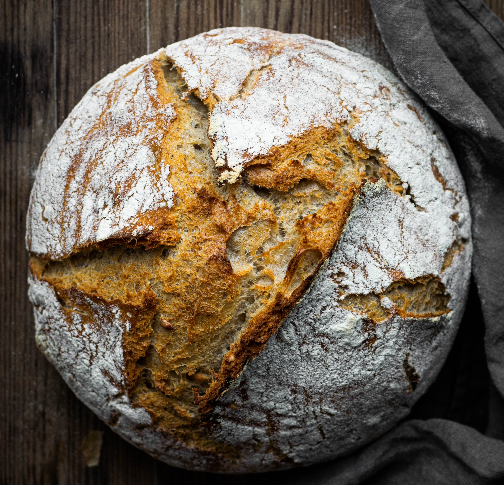
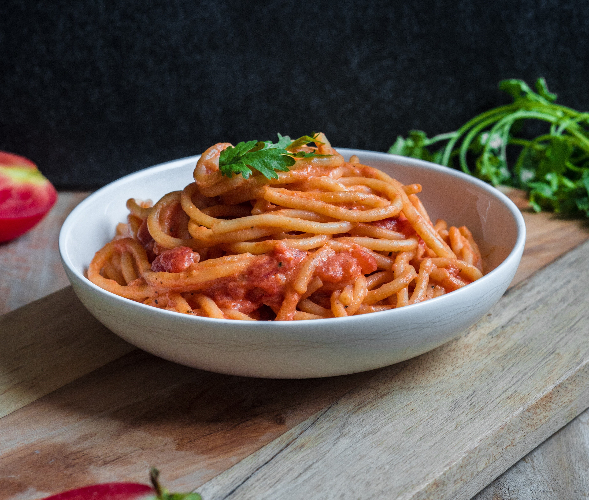

Pizza
Pizza, eine der bekanntesten und geliebtesten Speisen weltweit, ist ein rundes Fladenbrot, das mit einer Vielzahl von köstlichen Belägen belegt wird. Der knusprige Teig dient als Basis für eine köstliche Kombination aus Tomatensauce, Käse und einer Fülle von Zutaten. Von traditionellen Optionen wie Salami, Paprika, Champignons, Zwiebeln und Oliven bis hin zu kreativen Variationen wie Ananas, Rucola oder gegrilltem Gemüse gibt es für jeden Geschmack etwas Passendes. Die Pizza wird traditionell im Ofen gebacken, wodurch der Käse schmilzt und die Aromen perfekt verschmelzen. Die Pizza ist für ihre unwiderstehliche Mischung aus herzhaftem Geschmack, knuspriger Textur und köstlichem Aroma bekannt.
Brot
Brot ist ein Grundnahrungsmittel, das in vielen Kulturen auf der ganzen Welt einen wichtigen Platz einnimmt. Es gibt unzählige Brotarten, von luftigen Weißbrotsorten über nahrhaftes Vollkornbrot bis hin zu knusprigen Baguettes und köstlichen Brötchen. Brot wird aus einer einfachen Kombination von Mehl, Wasser, Hefe und Salz hergestellt, aber die Vielfalt liegt in den Details. Von traditionellen Sauerteigbroten, die mit Zeit und Geduld hergestellt werden, bis hin zu knusprigen Ciabatta-Broten oder aromatischen Zwiebelbaguettes gibt es für jeden Geschmack und jede Vorliebe etwas Passendes. Brot ist bekannt für seinen unverwechselbaren, duftenden Geschmack und seine weiche Textur, die perfekt zu Suppen, Salaten oder einfach nur mit Butter genossen werden kann. Es ist ein Nahrungsmittel, das uns ein Gefühl von Wärme, Geborgenheit und Nährstoffen vermittelt.
Pasta
Pasta, eine der beliebtesten Speisen aus Italien, hat die Herzen vieler Menschen erobert. Pasta wird aus einem einfachen Teig aus Weizenmehl, Wasser und manchmal Eiern hergestellt und dann zu verschiedenen Formen und Größen geformt. Von den klassischen Spaghetti über Penne, Linguine bis hin zu farbenfrohen Farfalle gibt es unzählige Variationen, die die Sinne ansprechen. Pasta wird in kochendem Wasser gekocht und mit einer Vielzahl von köstlichen Saucen serviert. Ob eine reichhaltige Tomatensauce, ein cremiges Pesto oder eine herzhafte Fleischsauce - die Möglichkeiten sind endlos. Die al dente gekochte Pasta ist bekannt für ihre zarte Konsistenz und die Fähigkeit, den Geschmack der Sauce aufzunehmen. Sie ist ein Symbol für die italienische Küche und verkörpert die Leidenschaft der Italiener für gutes Essen.
